1Start with the drive through ground 3D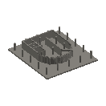1 gravel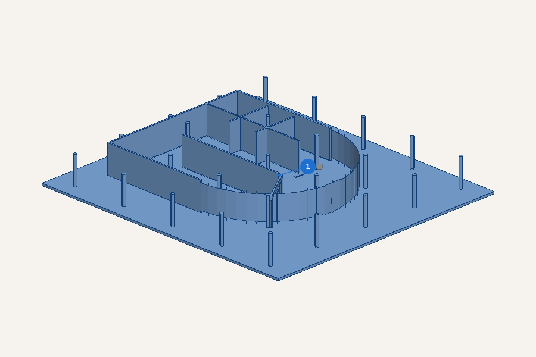1 drive through ground gravel — the base
2Glue the return stair lower flight b onto the drive through ground 3D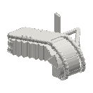2 white render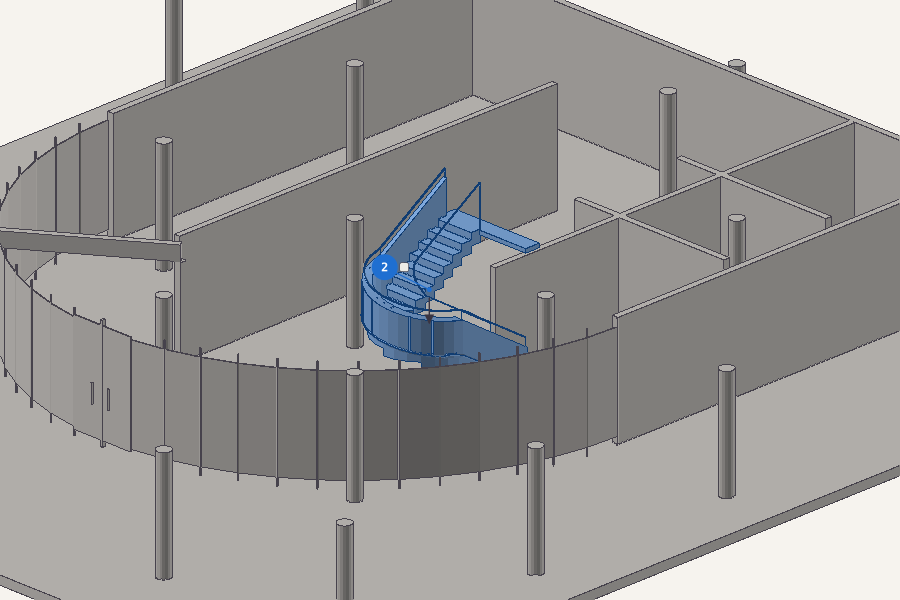2 return stair lower flight b white render onto 1 drive through ground
3At the bench: build the entrance ramp first flight west parapet, with the entrance ramp return flight east parapetBuild this on its own first 3D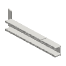3 white render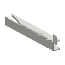4 white render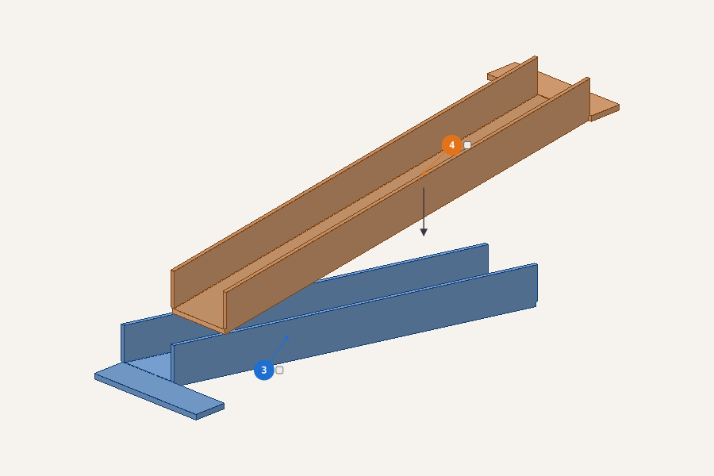3 entrance ramp first flight west parapet white render — start of this assembly4 entrance ramp return flight east parapet white render onto 3 entrance ramp first flight west parapet
4Fit the entrance ramp first flight west parapet assembly onto the drive through groundFit it 3D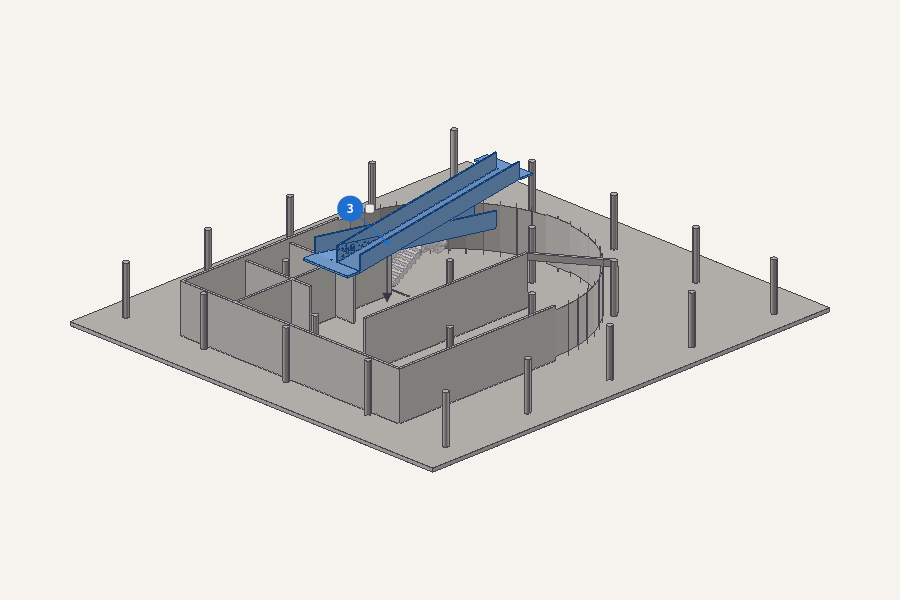3 the entrance ramp first flight west parapet assembly onto 1 drive through ground
5At the bench: build the living floor west, with the salon, the guest divider and the bedroomBuild this on its own first 3D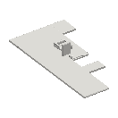5 white render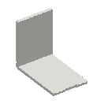6 white render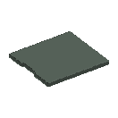7 ground floor green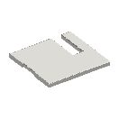8 white render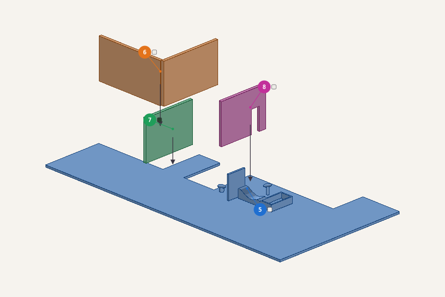5 living floor west white render — start of this assembly6 salon white render onto 5 living floor west7 guest divider ground floor green onto 5 living floor west8 bedroom white render onto 5 living floor west
6Glue the bedroom east, the bath wc jamb and the return stair upper flight a onto the living floor west 3D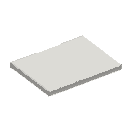9 white render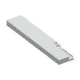10 fittings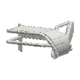11 white render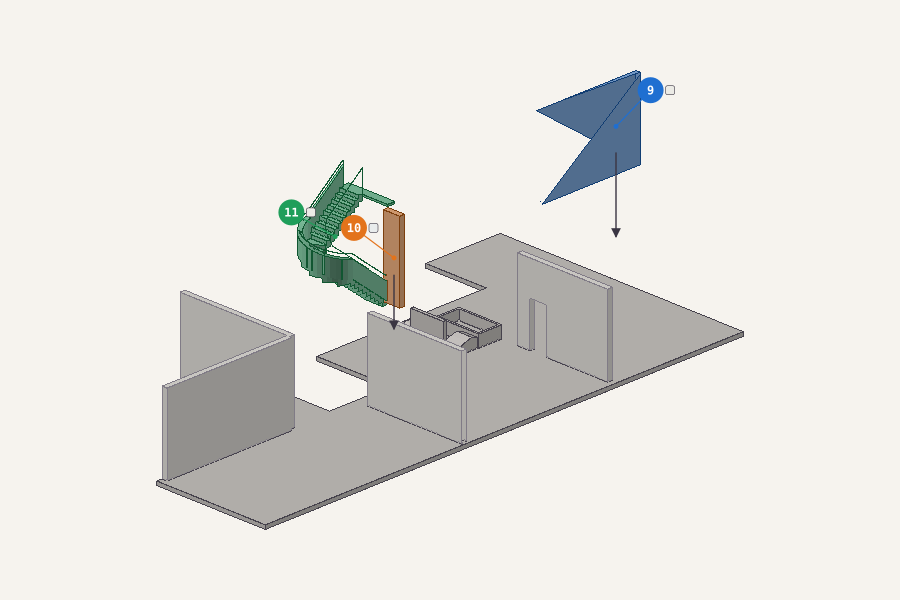9 bedroom east white render onto 5 living floor west10 bath wc jamb fittings onto 5 living floor west11 return stair upper flight a white render onto 10 bath wc jamb
7Glue the bath core east, the bedroom east and the terrace to solarium ramp west parapet onto the living floor west 3D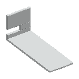12 fittings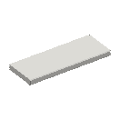13 white render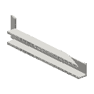14 white render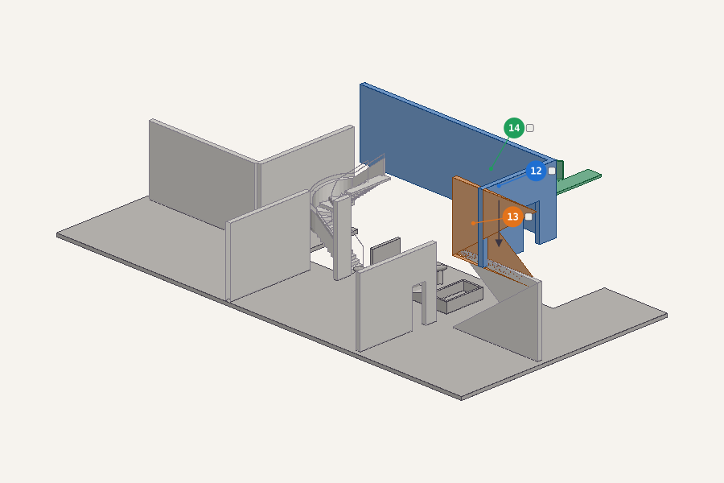12 bath core east fittings onto 5 living floor west13 bedroom east white render onto 12 bath core east14 terrace to solarium ramp west parapet white render onto 12 bath core east
8Glue the left, the guest divider, 2 × roof and the back onto the living floor west 3D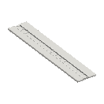15 white render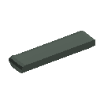16 ground floor green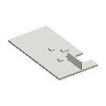17 white render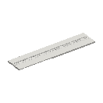18 white render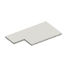19 white render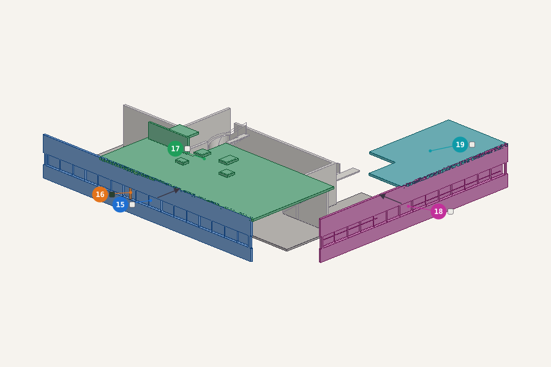15 left white render onto 5 living floor west16 guest divider ground floor green onto 15 left17 roof white render onto 15 left18 back white render onto 5 living floor west19 roof white render onto 18 back
9Fit the living floor west assembly onto the drive through groundFit it 3D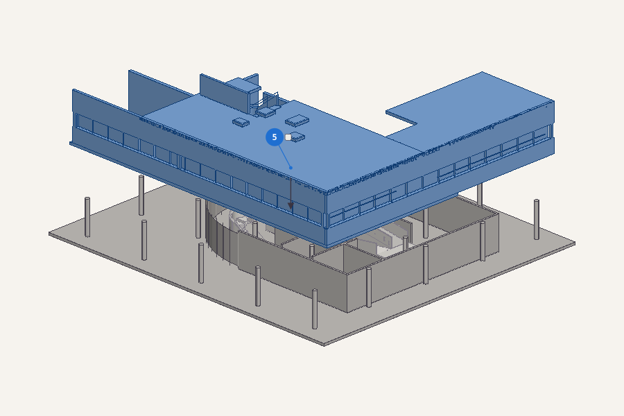5 the living floor west assembly onto 1 drive through ground
10At the bench: build the living floor east, with the kitchen access east and the upper ramp return east parapetBuild this on its own first 3D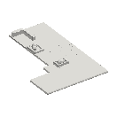20 white render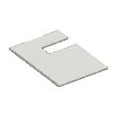21 white render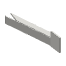22 white render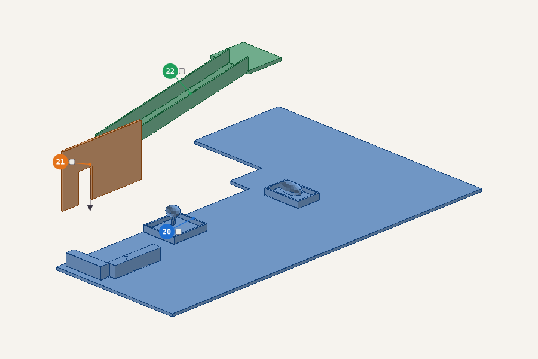20 living floor east white render — start of this assembly21 kitchen access east white render onto 20 living floor east22 upper ramp return east parapet white render onto 21 kitchen access east
11Glue the kitchen east, the salon, the right and the terrace onto the living floor east 3D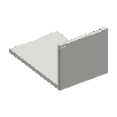23 white render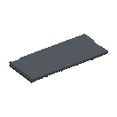24 window glass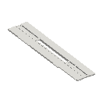25 white render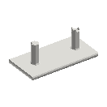26 white render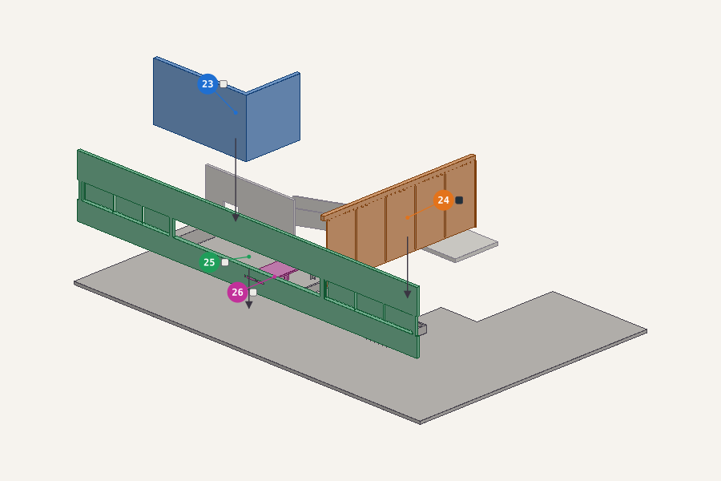23 kitchen east white render onto 20 living floor east24 salon window glass onto 20 living floor east25 right white render onto 20 living floor east26 terrace white render onto 25 right
12Glue the front, the roof, the solarium and the solarium long curved screen onto the living floor east 3D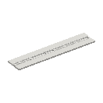27 white render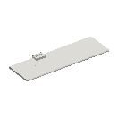28 white render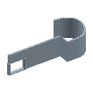29 solarium blue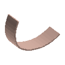30 solarium rose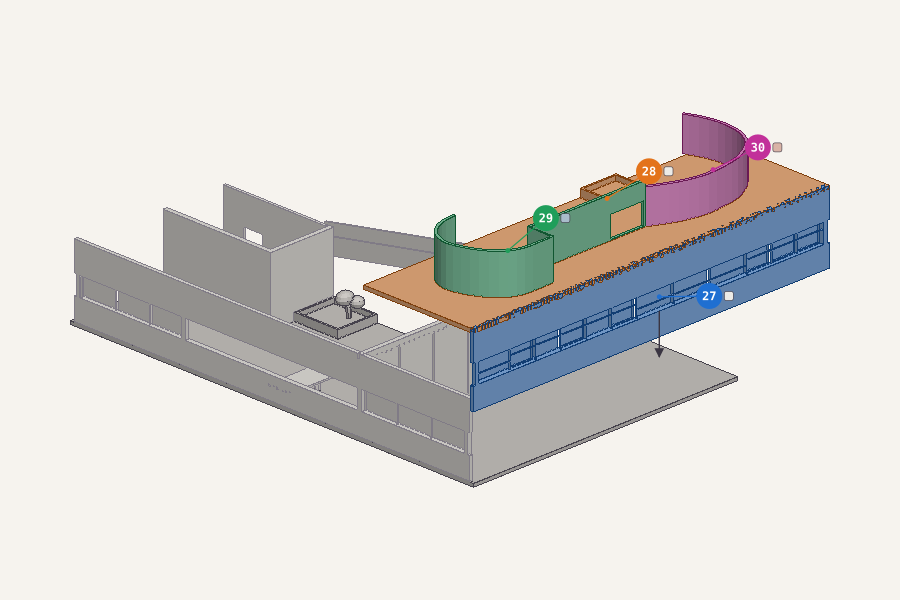27 front white render onto 20 living floor east28 roof white render onto 27 front29 solarium solarium blue onto 28 roof30 solarium long curved screen solarium rose onto 28 roof
13Fit the living floor east assembly onto the drive through groundFit it 3D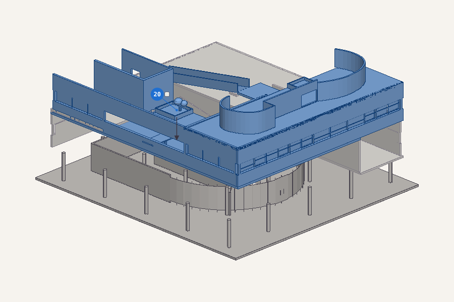20 the living floor east assembly onto 1 drive through ground